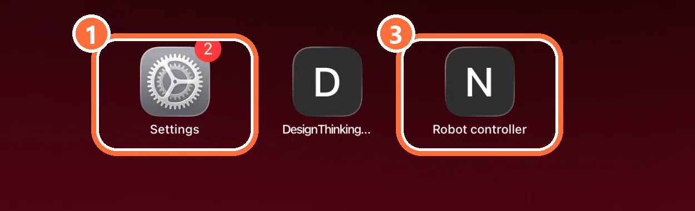
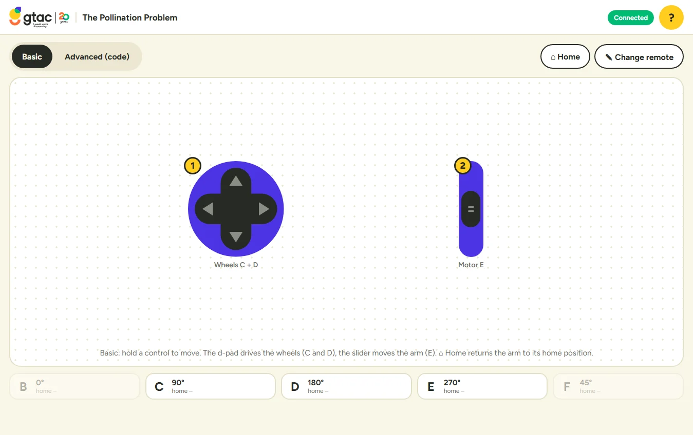

01/05
Robo Pollinator Instructions
In this activity, you will control a robotic pollinator. Your goal is to
pollinate as many flowers as you can in one minute.
Drag the robot to turn it. Tap ▶ Start for one minute, then + 1 flower each time you pollinate a flower.
02/05
What does the remote actually control?
Tap the numbers under the robot pollinator model to learn what motor each LEGO port controls.
03/05
Start the Robot Pollinator
Tap the numbers under the hub to go through each step. Drag the hub to turn it.
04/05
Connect your iPad to the robot

- On the iPad, open Settings → Wi-Fi.
- Join the network with your board's name, for example ROBOT 12. The password is gtacrobot.
- Open the Robot controller app on your iPad's home screen.
The iPad may say there is no internet on this Wi-Fi. That is fine: stay connected. Switch back to the Discovery Wi-Fi when you finish.
05/05
Drive your pollinator with the remote

- Make sure Basic is selected.
- Hold the D-pad (1) to drive: up and down drive forward and back, left and right turn.
- Push the slider (2) up or down to move the pollination arm.
- Tap ✎ Change remote to add, move or set up controls and choose which motor each one moves.
Want to code your robot instead? See Change the way your robot pollinator moves.